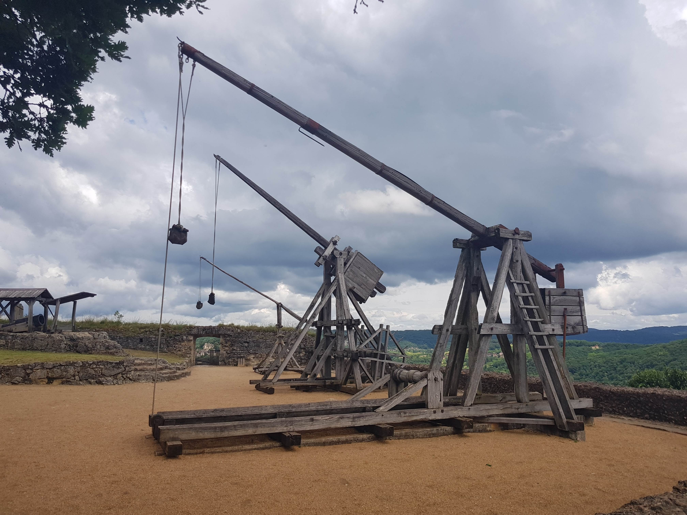
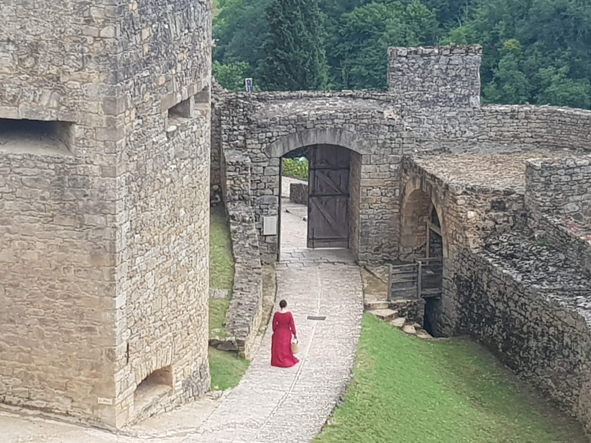
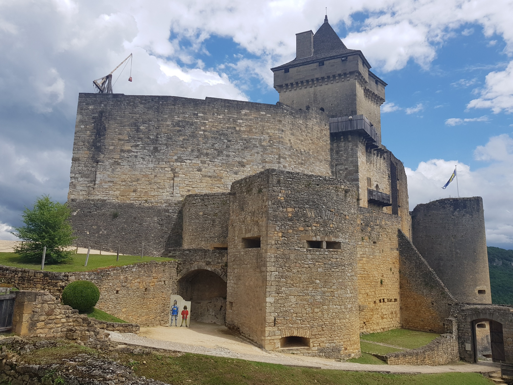
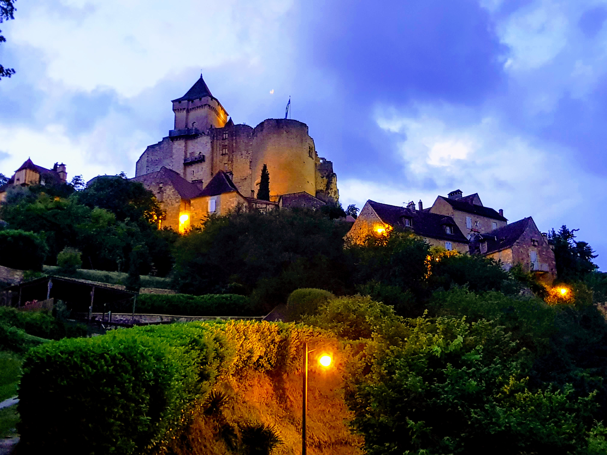
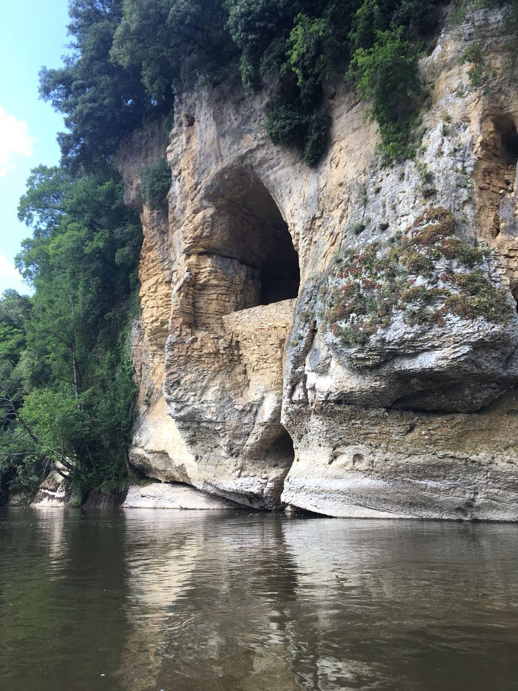

Château de Castelnaud-la-Chapelle...lies at the confluence of the Dordogne and Ceou river.
Nouvelle-Aquitaine, South-West France.

Siege Machines...a Trebuchet, Mangonel and Bombarde in attack positions along the Bastion.

The English occupied the château many times...until the French regained control following a final siege in 1442.

The Trebuchet...stands atop the castle and sent missiles as large as 36kg (80lbs) up to 300 yards. These would then roll down the hillside wrecking anything in their path.

Village houses...were abandoned during battles, and residents would take shelter within the walls of the château.

The Dordogne river...runs along the bottom of the valley, at the bottom of a steep slope from the château. Ancient cave dwellings line the banks of the river.